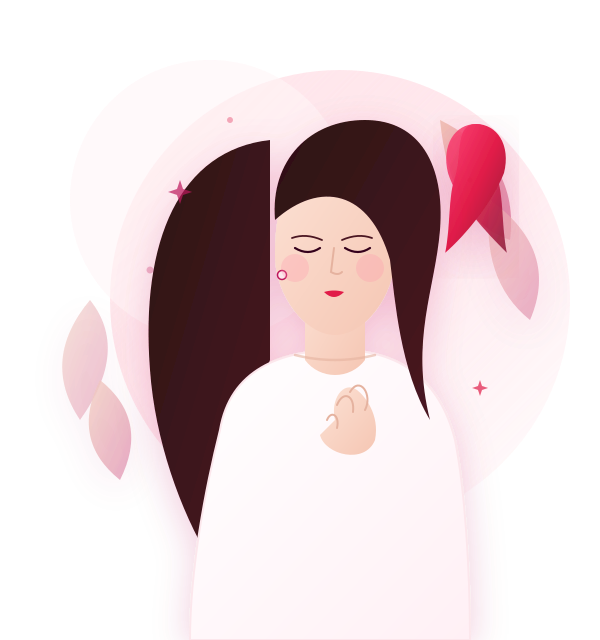

Conhecer é uma forma de cuidar.
Informação confiável sobre prevenção, autoconhecimento do corpo, sinais de alteração e locais de atendimento no SUS. Baseado em dados oficiais do Ministério da Saúde e do Instituto Nacional de Câncer (INCA).
78.610
Casos novos estimados/ano
(INCA 2026–2028)
28%
Preveníveis com hábitos
saudáveis de vida
30%
Dos novos tumores em
mulheres no Brasil

Informação que faz diferença
Quatro eixos fundamentais para orientar sua rotina, tirar dúvidas e proteger quem você ama.
Prevenção
Hábitos e escolhas no estilo de vida que ajudam a reduzir os riscos em até 28%.
→Sinais
Mudanças corporais que precisam de atenção médica e como conhecer seu corpo.
→Atendimento
Onde buscar apoio, agendamento no SUS, Disque 136 e centros de referência.
→Fontes
Conteúdo rigorosamente baseado em estimativas oficiais do INCA e Ministério da Saúde.
→1º tumor mais frequente em mulheres no Brasil (INCA).
Risco projetado nacionalmente para o período 2026–2028.
Risco de 18,59 óbitos / 100 mil mulheres (SIM/INCA).
Com alimentação saudável, exercício e controle de peso.
Prevenção e Fatores de Risco
A prevenção envolve reduzir fatores de risco modificáveis e adotar medidas protetoras no cotidiano.
Hábitos que Podemos Transformar
- Sedentarismo: Manter o corpo em movimento estimula o sistema imunológico e reduz processos inflamatórios.
- Excesso de peso após a menopausa: O tecido adiposo acumula estrogênios que influenciam as células mamárias.
- Consumo de bebidas alcoólicas: O álcool atua como fator de risco modificável comprovado cientificamente.
- Tabagismo e reposição hormonal sem acompanhamento: Exigem avaliação clínica contínua.
Aspectos Genéticos e Biológicos
- Idade: A incidência aumenta progressivamente com o avançar da idade, em especial após os 50 anos.
- Histórico Familiar e Genética: Representam apenas 5% a 10% dos casos totais de câncer de mama.
- Ciclo Reprodutivo: Primeira menstruação precoce (antes dos 12 anos) ou menopausa tardia (após os 55 anos).
Atividade Física Regular
O INCA classifica o exercício como medida de prevenção primária indispensável.
Peso Corporal Saudável
Evitar o sobrepeso pós-menopausa reduz a produção periférica de estrogênios.
Alimentação Equilibrada
Priorizar alimentos in natura, fibras, frutas e hortaliças, evitando ultraprocessados.
Evitar Bebidas Alcoólicas
O consumo alcoólico é um fator de risco modificável de grande relevância.
Amamentar pelo Maior Tempo
A amamentação promove a diferenciação celular dos ductos mamários e protege a mulher.
Não Fumar
A cessação do tabagismo traz proteção ampla e sistêmica à integridade celular.
Conhecimento Próprio do Corpo
Estar atenta ao próprio corpo no dia a dia é o primeiro passo para perceber qualquer alteração precoce.
1. Em Frente ao Espelho
Com os braços relaxados, depois elevados e depois apoiados na cintura: observe o contorno, a simetria, se há abaulamentos, retrações da pele ou alterações no formato dos mamilos.
2. Durante o Banho
Com a pele ensaboada, levante o braço esquerdo e coloque a mão atrás da cabeça. Com as pontas dos dedos da mão direita estendidos, realize movimentos circulares suaves por toda a mama e axila. Repita do outro lado.
3. Ao Deitar-se
Coloque uma toalha sob o ombro direito e apalpe a mama direita com a mão esquerda. Sinta se há caroços endurecidos ou texturas espessas, sem esquecer a região da clavícula e axilar.
Lembrete Fundamental da Sociedade Brasileira de Mastologia (SBM) e do INCA: A auto-observação estimula o conhecimento do próprio corpo, mas não substitui a mamografia de rotina nem a consulta ginecológica periódica. O diagnóstico de lesões muito pequenas ocorre antes de serem palpáveis, somente por meio de exames de imagem.
Sinais que Merecem Avaliação Médica
Identificar sinais precoces salva vidas. Fique atenta a qualquer uma das seguintes manifestações descritas pelo INCA:
Nódulo ou Caroço Endurecido
Especialmente se for fixo, endurecido, indolor ou apresentar crescimento com o passar dos dias.
Pele com Aspecto de "Casca de Laranja"
Retração, repuxamento, vermelhidão ou áreas rugosas na superfície da mama.
Alterações no Mamilo
Inversão súbita, retração ou desvio na direção natural do bico da mama.
Saída Espontânea de Secreção
Líquido saindo sem apertar de um dos mamilos, principalmente se for transparente ou com sangue.
Nódulos nas Axilas ou Pescoço
Gânglios ou caroços palpáveis na região axilar ou cervical que permanecem por várias semanas.
Inchaço e Aumento Assimétrico
Edema persistente ou alteração de volume acentuada em apenas uma das mamas.
Mensagem de Responsabilidade Médica
Perceber uma alteração não significa ter câncer, mas é motivo para procurar atendimento em uma Unidade Básica de Saúde (UBS). A maior parte dos nódulos tem natureza benigna (cistos, fibroadenomas), mas somente a investigação especializada com exames pode confirmar.
Onde Buscar Informações e Atendimento
O SUS e as redes de apoio oferecem atendimento 100% gratuito, exames e acolhimento em todo o Brasil.
Unidades Básicas de Saúde (UBS / Postos)
A porta de entrada do SUS. Procure a UBS mais próxima do seu bairro para consulta médica inicial, exame clínico das mamas e agendamento de mamografia.
Atendimento Gratuito e UniversalDisque Saúde 136 (Ministério da Saúde)
Central telefônica pública, gratuita e disponível 24 horas por dia para tirar dúvidas, saber onde fazer mamografia na sua cidade e consultar direitos.
Ligue 136 de qualquer telefoneAplicativo Meu SUS Digital
Aplicativo oficial do Ministério da Saúde para celular. Acompanhe resultados de exames, histórico de consultas, Cartão SUS e localização de postos.
Acessar Meu SUS Digital ↗Centros de Referência (CACON & UNACON)
Centros de Alta Complexidade Oncológica e hospitais de referência credenciados pelo SUS (como INCA no RJ, Hospital de Amor e redes estaduais) para suporte completo.
Rede Oncológica SUS ↗Teste seus conhecimentos!
Você sabe identificar os sinais de alerta e conhece as formas de prevenção do câncer de mama? Responda às 10 questões exclusivas baseadas nos relatórios oficiais do INCA e Ministério da Saúde. Ao final, veja sua nota, feedback educativo e posição no Ranking Escolar!
Quiz Outubro Rosa
10 perguntas com 4 alternativas, correção instantânea e pontuação gravada em banco de dados.
Começar quiz (10 Perguntas) →Carregando pergunta oficial do INCA...
Quiz Concluído!
Inscreva-se no Ranking Escolar
Grave seu resultado no banco de dados para ver sua colocação no pódio e na tabela:
Ranking Escolar Rosa em Alerta
Classificação auditável e em tempo real dos estudantes e docentes que se destacaram no quiz educativo de 10 questões.
| Posição | Participante | Categoria / Sala Escolar | Desempenho | Pontuação |
|---|
Mural Escolar de Apoio & Dúvidas
Um espaço acolhedor onde alunos e professores compartilham mensagens de incentivo, tiram dúvidas e multiplicam o autocuidado.
Deixe sua Mensagem de Conscientização
Compartilhe um aprendizado do projeto, homenageie uma pessoa querida ou deixe uma pergunta sobre saúde.